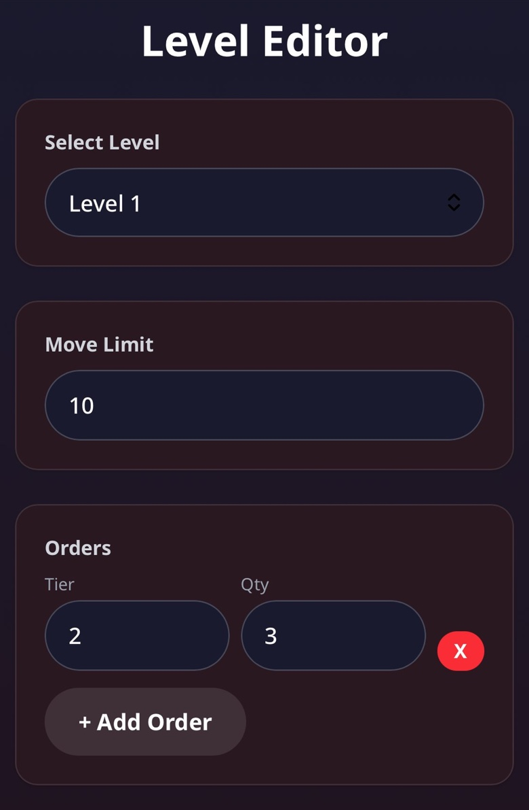
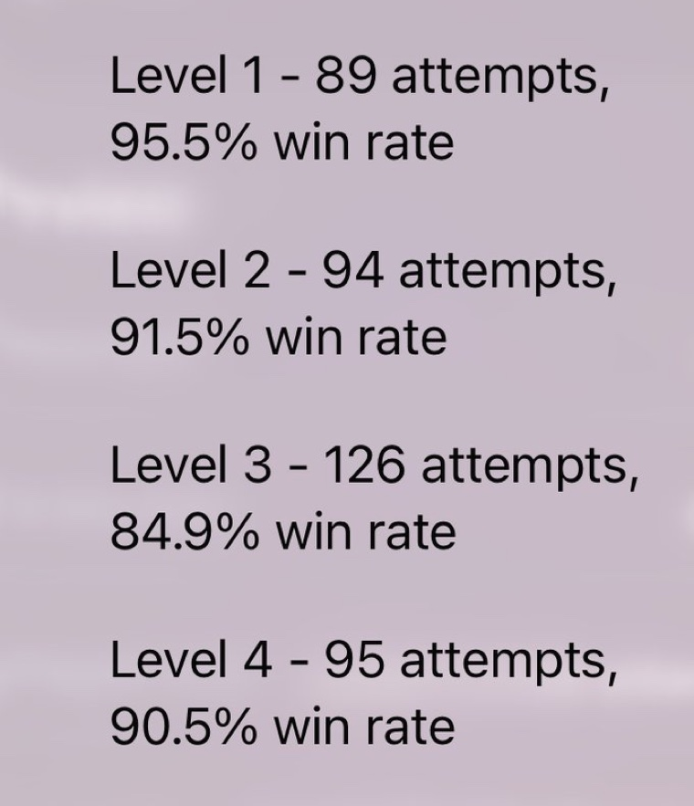
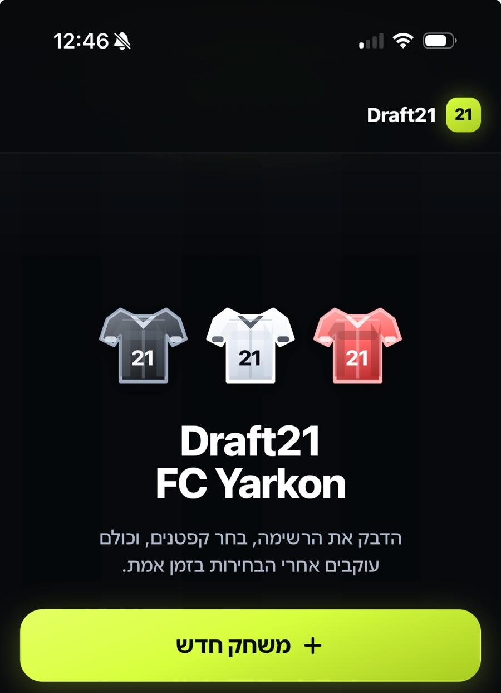
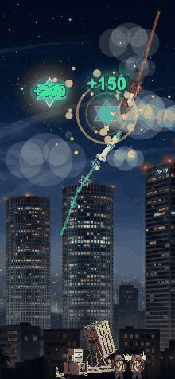

Merge Lab
The level editor and the win-rate dashboard came before the levels.
The dashboard flagged level 3 at an 84.9% win rate, a level that felt fine to me, because I built it.
Product Builder
A whole game, an iOS app on the App Store, and internal tooling for a live game with millions of players.

Selected work
Pre-launch
A puzzle battler where every line you clear hits the boss standing over your board.
Every boss attack is telegraphed a turn early, so losing reads as difficulty rather than bad luck
Analytics, crash reporting and Remote Config went in before launch, so difficulty moves without shipping a build
Designed and built solo: the loop, the FTUE, the progression, the balance
Live on the App Store
Turns site walkthroughs into structured findings and ready-to-send reports.

findings in one real report, exported in a single pass
Not a report viewer: the file they already send clients. Word to edit, PDF when it's final
A construction inspection company runs real jobs on it
At work · SuperPlay / Dice Dreams
Live events, campaigns and A/B tests go out through me. The tooling around them covers generation, validation, QA and measurement.
internal tools and automations now part of how the team works
setup and configuration that used to be assembled by hand
a build reported success and was still incomplete. Nothing went red. That's the failure the checking exists for


The level editor and the win-rate dashboard came before the levels.
The dashboard flagged level 3 at an 84.9% win rate, a level that felt fine to me, because I built it.

Twenty minutes of weekly arguing about fair teams, replaced by a live snake draft the host runs on his phone.
Used every week by the group it was built for. Fair isn't balanced: hand people three teams from an algorithm and they argue with the algorithm.

Every system I added made it worse. The version that worked came from taking things out.
Players quit at levels 3-5: note density jumped before anyone had learned to read lanes. I flattened that stretch.
A DJ set in your actual living room. Four gestures, no menus. It answered the question I built it for, so I stopped.
Every case study ends the same way: the calls I made, and what each one cost.

About
The combination is the useful part: I've seen how products operate at real scale, and I can take a product decision through to execution myself.
AI is how I cover this much ground: an execution layer, not a writing tool.
More about me →